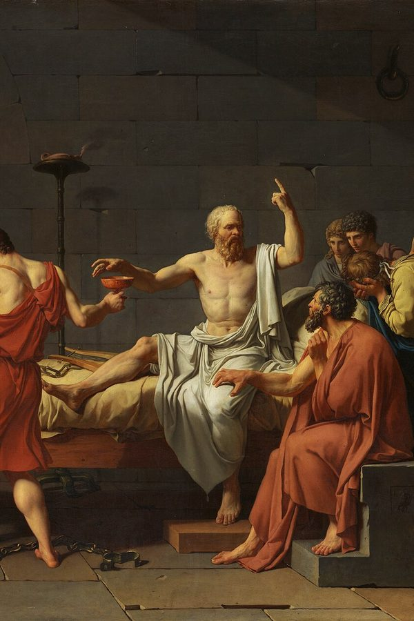

Apología de Sócrates
¿Cuál elegir? El PDF se abre en cualquier celular o computador. El EPUB es para aplicaciones de lectura (Google Play Libros, Apple Libros, Kindle o Kobo) y deja agrandar la letra.
Por qué leerlo
Para quien alguna vez se preguntó si vale la pena vivir según la propia conciencia cuando todos presionan en contra. Es corta y se lee en una tarde, pero deja una pregunta que sigue trabajando después: qué examina usted de su propia vida. La ortografía de 1871 se vuelve familiar en pocas páginas.
Resumen
La defensa de Sócrates ante el tribunal de Atenas, el año 399 a. C., acusado de corromper a los jóvenes y de no creer en los dioses de la ciudad. Platón, que estuvo presente, la reconstruye en tres discursos: la defensa, la propuesta de pena tras el veredicto de culpa y las palabras finales después de la condena a muerte. Sócrates prefiere morir antes que dejar de buscar la verdad y de servir a lo que entiende como un mandato divino. Traducción de Patricio de Azcárate (1871), con la ortografía de la época, su argumento y sus notas.
Edición Fénix
Edición digital de Proyecto Fénix sobre la traducción de Patricio de Azcárate (1871), transcrita en Wikisource: conserva la ortografía de la época, el argumento y las notas del traductor, con portada nueva.
Citas
El mayor bien del hombre es hablar de la virtud todos los dias de su vida y conversar sobre todas las demás cosas que han sido objeto de mis discursos, ya sea examinándome á mí mismo, ya examinando á los demás, porque una vida sin exámen no es vida.
Pero ya es tiempo de que nos retiremos de aquí, yo para morir, vosotros para vivir. ¿Entre vosotros y yo, quién lleva la mejor parte? Esto es lo que nadie sabe, excepto Dios.
Valoración moral
Sin valoración en Delibris
Libros parecidos
- Confesiones · San Agustín de Hipona
- Imitación de Cristo o menosprecio del mundo · Tomás de Kempis (trad. fray Luis de Granada)